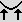

L'utilisation
de "cartes des eaux" avec Geomorph 0.40
Une "carte des eaux" est habituellement une copie du terrain en cours
d'édition, texturée dans Povray pour ressembler à
de l'eau et qui est superposée au terrain de départ. On
peut "inonder" ou faire "émerger" certaines parties du terrain
principal en éditant la carte des eaux ou le terrain
lui-même.
Geomorph 0.4 offre trois nouvelles scènes Povray pour faciliter
l'utilisation d'une carte des eaux. Un court "How-to" est
proposé ici pour chaque scène. En outre, deux de ces
pages peut être considérées comme des tutoriels
pour l'outil de "relèvement des bords" .
Cliquez sur ces images pour en apprendre davantage.
Écrit en janvier 2007
 Retour à
l'index de la documentation
Retour à
l'index de la documentation
Contact:
Patrice St-Gelais